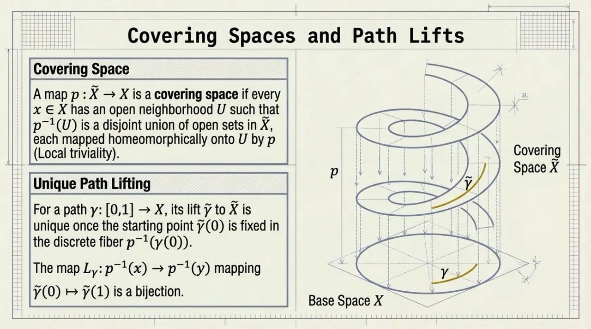

기둥 2 · 무리가 공간을 움직이는 법 · 10장
덮개 공간과 길 — 빙글빙글 주차장
바닥의 길을 위층으로 들어 올리는 법
바닥의 길을 위층으로 들어 올리는 법
핵심 질문 — 바닥 위를 도는 길을, 나선형 주차장의 위층 길로 「들어 올리면」 무엇을 알 수 있을까?
나선형 주차장을 위에서 내려다보면 원 하나만 보여요. 그런데 한 바퀴 돌 때마다 한 층씩 올라가죠. 이 주차장(나선)과 바닥(원)의 관계가 덮개 공간이에요. 바닥에서 몇 바퀴 돌았는지가 위층에서는 「몇 층 올라갔나」로 드러나요.
숫자 요약은 이 장의 예시 계산에서 나온 값입니다(실제 데이터가 아닌 설명용 값).
1조 발표 시작합니다. 모형은 「빙글빙글 주차장」이에요.
2조는 「정말 하나뿐이야?」 같은 질문을 준비해 두세요.
행렬·벡터, 복잡한 공식을 몰라도 됩니다. 그림을 움직여 보고, 밑줄 친 말을 누르면 뜻이 나옵니다.
이 페이지 사용법: 밑줄 친 말을 누르면 뜻이 나옵니다(Esc로 닫기). 단계마다 그림을 직접 움직여 보고, 끝의 확인 퀴즈로 점검하세요. 앞 장: 09 타일과 격자 — 한 조각으로 바닥 전체를 덮기
1조(도넛조: 시아·하루·X1)가 「빙글빙글 주차장」 모형으로 덮개 공간을 발표하고, 2조가 질문해요.
질문! 주차장 층이 끝없이 있으면 몇 겹 덮개예요?
…층마다 하나씩, 정수만큼. 무한 겹.
원 위를 한 바퀴 돈 것과 안 돈 것은 바닥에서는 같은 자리에 끝나요. 덮개에서는 층이 달라요.
나선(수직선)을 정수 걸음으로 접으면 원이에요(07장). 덮개는 그 반대 방향으로 「펼친 그림」이에요.
덮개를 모두 모아 분류하면, 대수(군)의 부분군과 짝이 맞아요. 그 준비 단계예요.
「틸데(~)」 기호는 「위층에 있는 것」이라는 표시예요. γ는 바닥의 길, γ̃는 그 길을 위층으로 들어 올린 것.
상황 질문 — 나선형 주차장을 드론으로 위에서 찍으면 원 하나로 보여요. 원 위의 한 점 바로 위에는 주차장의 몇 곳이 겹쳐 있을까요?
p⁻¹(U)에서 −1은 「나누기 1」이에요?
학교 수학으로 보면: 거듭제곱의 −1이 아니라, 함수 단원의 「역」이에요. 「p로 보냈을 때 U에 떨어지는 위층 점들 전부」라는 뜻(역상)이에요.
| 식 조각 | 읽는 법 | 뜻 |
|---|---|---|
| p: X̃ → X | 피, 엑스 틸데에서 엑스로 | 위층 점을 바로 아래 바닥 점으로 보내는 지도 |
| p⁻¹(x) | 피 역 엑스 | 바닥 점 x 바로 위의 위층 점들 = 올 |
| p⁻¹(U) = ⊔ Vᵢ | U 위가 서로 떨어진 조각 Vᵢ들로 나뉨 (⊔ = 겹치지 않는 합집합) |
바닥 = 원, 위층 = 나선(수직선), p(t) = 각도 t를 원 위의 점으로
바닥 점 「0°」 위의 올 = {0층, 1층, 2층, …} (각도 0, 360°, 720°, …)
0° 둘레의 작은 호 (−10°, 10°) 위 = 층마다 떨어진 작은 호들
각 작은 호는 바닥의 호와 똑같은 모양 → 덮개
「역」이라는 말 덕분에 「아래에서 위를 찾아 올라간다」는 느낌이 드네요.
나선형 주차장에서 바닥 원의 한 자리 바로 위에는 층마다 한 곳씩 주차 자리가 있어요. 바닥의 짧은 구간 위에는 층마다 따로 떨어진 짧은 구간이 놓여 있어요.
덮개 공간 p: X̃ → X는 국소적으로 「서로 떨어진 사본들」처럼 생긴 지도예요. 바닥 점 x 위의 점 모음 p⁻¹(x)를 올이라 하고, 올은 이산적(점마다 떨어짐)이에요. 수직선 → 원(나선 모형)이 대표 예예요.
바닥의 빨간 점을 움직이며, 그 위 파란 점(올)이 어떻게 따라오는지 보세요.
파란 점이 많을수록 큰 주차장이니까, 좋은 덮개죠!
개수보다 「따로 떨어져 있나」가 덮개의 조건이야.
원자료 「Covering Spaces and Path Lifts」 위쪽 상자와 오른쪽 나선 그림(Covering Space X̃ 위, Base Space X 아래).

상황 질문 — 주차장 바닥 지도에 「반 바퀴 돌아라」라고만 적혀 있다면, 운전자가 위층에서 어디에 도착할지 알 수 있을까요?
경사로가 빙글빙글 이어진 주차장에서, 「지금 2층에서 출발해 한 바퀴 반 돌아라」라고 하면 도착 위치가 딱 정해져요. 출발 층이 다르면 도착 층도 그만큼 달라요.
덮개 p: X̃ → X에서 바닥의 길 γ: [0,1] → X와 올의 점 γ̃(0)을 정하면, p∘γ̃ = γ인 길 들어올리기 γ̃가 유일하게 있어요. 원을 k바퀴 도는 고리를 들어 올리면 k층 위(아래)에 도착해요.
출발 층과 바퀴 수를 바꿔 보세요! 1바퀴, 2바퀴, 반 바퀴.
바닥에서 제자리로 돌아왔으면, 위층에서도 제자리겠죠!
한 바퀴 돌려 봐. 초록 출발점과 빨간 도착점 높이를 비교해.
원자료 「Unique Path Lifting」 상자: 출발점 γ̃(0)을 올에서 정하면 들어 올린 길은 유일. 오른쪽 그림의 노란 길 γ와 γ̃.
상황 질문 — 모든 층에서 동시에 「한 바퀴 돌기」를 하면, 각 층 사람들은 어느 층에 도착할까요? 두 사람이 같은 층에 도착할 수도 있을까요?
「일대일 대응(전단사)」은 학교에서 배운 그거 맞아요?
학교 수학으로 보면: 네, 중학교 함수 단원의 일대일 대응이에요. 출발마다 도착이 하나, 도착마다 출발이 하나.
| 식 조각 | 읽는 법 | 뜻 |
|---|---|---|
| L_γ: p⁻¹(x) → p⁻¹(y) | x 위의 층들을 y 위의 층들로 보내는 대응 | |
| γ̃(0) ↦ γ̃(1) | 출발 층에서 들어 올린 길의 도착 층으로 | |
| n겹 덮개 | 올에 점이 n개인 덮개 (n층짜리 둥근 주차장) |
4겹 고리(4층짜리, 4층 위는 다시 0층), 바닥을 1바퀴
0층→1층, 1층→2층, 2층→3층, 3층→0층
도착이 겹치지 않고 빠짐도 없음 → 일대일 대응
2바퀴면 0→2, 1→3, 2→0, 3→1 (역시 일대일)
층들이 빙글빙글 돌아가며 자리를 바꾸는 거네요. 의자 뺏기 놀이인데 의자가 딱 맞게 있는 것처럼!
엘리베이터가 모든 층에서 동시에 「한 층 위로」를 누르면, 층마다 사람들이 한 층씩 올라가요. 맨 위층이 다시 맨 아래층과 이어진 둥근 건물이라면 아무도 자리를 잃지 않아요.
고리 γ를 모든 출발점에서 들어 올리면 올 위의 일대일 대응 L_γ가 생겨요. n겹 덮개에서 k바퀴 도는 고리는 층을 k만큼 돌려 옮기는(나머지 n으로) 대응을 줘요.
…내 발표 차례. 겹 수와 감는 바퀴를 바꿔 봐.
6겹에 6바퀴면 층이 36층 움직이죠!
6바퀴면 6층 움직이는데, 6층 위는 다시 0층이야. 결국 제자리.
원자료 「Unique Path Lifting」 아래 문장: L_γ: p⁻¹(x) → p⁻¹(y), γ̃(0) ↦ γ̃(1)은 일대일 대응.
모아가 AI에게 「덮개 공간에서 길을 들어 올리는 방법은 언제나 하나뿐인가요?」라고 물었어요.
정리의 「~를 정하면」 부분이 빠지면 결론이 틀려져요. AI 답에서 조건 문구가 사라졌는지 원래 정리와 나란히 놓고 확인하세요.
나선형 주차장(나선 → 원 덮개)의 0층에서 출발해 바닥 원을 정확히 한 바퀴 도는 길을 들어 올렸을 때, 도착 층은?
「1층. 한 바퀴마다 한 층 올라가.」
「바닥에서 제자리로 돌아왔으니 위층에서도 0층!」
누가 맞을지 먼저 예상해 보고 단추를 누르세요. 판정은 계산 결과로만 합니다.
개념정리 흐름: 덮개 공간과 올 → 유일한 길 들어올리기 → 올 위의 일대일 대응
| 개념 | 한 줄 뜻 | 일상 비유 | 비유의 한계 |
|---|---|---|---|
| 덮개 공간 | 국소적으로 떨어진 같은 모양의 겹 | 나선형 주차장 | 실제 주차장은 층 수가 유한하지만 나선 모형은 무한 |
| 올 | 한 점 바로 위의 점들 | 같은 자리의 층별 주차 자리 | 올의 점들은 서로 떨어져 있음 (이산) |
| 길 들어올리기 | 출발점을 정하면 유일 | 경사로 운전 | 출발점을 안 정하면 여러 개 |
| 일대일 대응 L_γ | 고리가 올을 자리 바꿈 | 엘리베이터 층 버튼 | 바닥이 복잡하면 자리 바꿈도 복잡해짐 |
1조 발표 평가: 모형 하나로 세 개념을 이었어요. 2조의 「무한 겹」 질문도 좋았습니다.
한 바퀴에 한 층! 이제 안 헷갈려요.
…일대일 대응 발표, 끝까지 했다.
제자리라고 했는데 1층이었네요….
다음 장 예고: 11장 계산배틀에서는 덮개들을 모두 모아 군의 부분군과 짝짓는 「갈루아 대응」을 다뤄요. 층 바꾸기가 몇 가지인지 숫자로 겨뤄요.